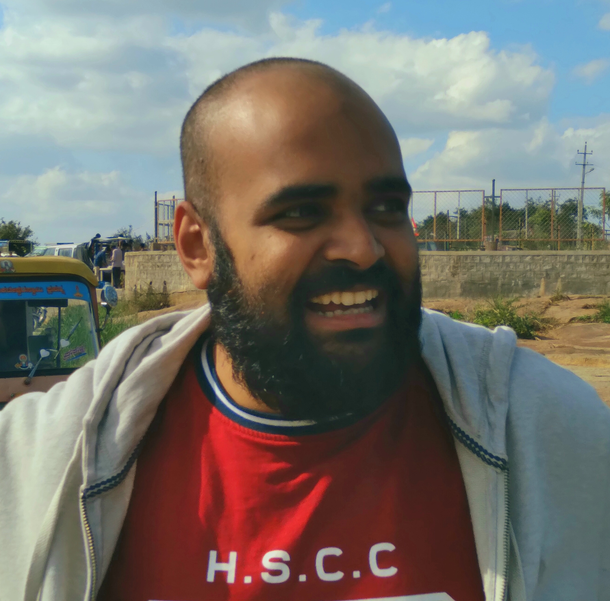

My interests, sometimes to my dismay, have been broad and wide, ranging from psychiatry, neuroscience to cell biology and genetics.
However, I try my best to focus on metabolism, which has been my core scientific interests, for some time now.
My research however has been, and still continues to be, fully computational and data-driven, while of course working closely with the experimentalists and clinicians.
I'm a terrible public science communicator; it's not really my thing, and I usually stay away from it. (I love Carl Sagan though).
Besides work, I enjoy traveling, driving long distances, spending time with friends, catching movies and TV shows, and sometimes giving southern Indian cooking a shot.